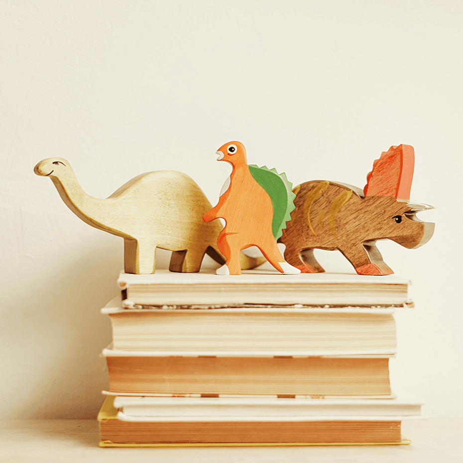

<section class="inspiring-young-minds__background">
  <section class="inspiring-young-minds">
    <article class="inspiring-young-minds__content container">
      <div class="inspiring-young-minds__container-image">
        
      </div>
      <div class="inspiring-young-minds__text">
        <p class="inspiring-young-minds__description">
          Children's books are not just tools for teaching reading skills; they
          are gateways to understanding the world, shaping young minds, and
          fostering empathy. One of the most powerful ways to achieve this is by
          incorporating diversity into children’s literature. Promoting
          diversity in children's literature also means supporting diverse
          authors. When publishing houses and readers embrace books by authors
          from different backgrounds, they help diversify the literary
          landscape. This not only enriches the variety of stories available but
          also ensures that authentic voices and experiences are shared and
          celebrated.
        </p>
        <div class="inspiring-young-minds__quote">
          
          <blockquote class="inspiring-young-minds__quote-text">
            Diverse books provide windows and mirrors for young readers. For
            children from underrepresented groups, seeing characters who look
            like them, speak their language, or share their experiences can be
            incredibly affirming.
          </blockquote>
        </div>
        <p class="inspiring-young-minds__description">
          These "mirror" books validate their identity, making them feel seen
          and valued. Conversely, "window" books allow children to peer into the
          lives of others, fostering empathy, understanding, and a broader
          worldview. Studies have also shown that children are more engaged and
          motivated when they see themselves in the stories they read. This
          increased engagement can lead to better academic outcomes. Moreover,
          reading about diverse experiences enhances vocabulary and
          comprehension skills, as children encounter new concepts and
          perspectives.
        </p>
        <h3 class="inspiring-young-minds__title">Reflecting Real Life</h3>
        <p class="inspiring-young-minds__description">
          Our societies are rich tapestries of cultures, languages, and
          experiences. Yet, for many years, children's literature has not
          reflected this diversity. By introducing stories that depict various
          races, ethnicities, abilities, and family structures, we help children
          understand and appreciate the beauty of our multifaceted world. Such
          representation helps combat stereotypes and reduces prejudices,
          creating a more inclusive and compassionate generation.
        </p>
        <p class="inspiring-young-minds__accent">
          <span class="inspiring-young-minds__accent-icon">●</span> Building
          Empathy and Understanding
        </p>
        <p
          class="inspiring-young-minds__description inspiring-young-minds__description-italic"
        >
          When children read about characters different from themselves, they
          develop empathy. Understanding diverse perspectives encourages them to
          step into others' shoes and see the world through their eyes. This
          empathetic skill is crucial for building a more tolerant and just
          society. Books that highlight different cultural practices,
          experiences, and challenges broaden young readers' horizons, making
          them more open-minded and accepting.
        </p>
        <p class="inspiring-young-minds__description">
          Diverse books often tackle complex themes and social issues, from
          immigration and racism to disability and gender identity. These
          stories encourage young readers to think critically about the world
          around them and question injustices. They prompt meaningful
          discussions between children and adults, helping kids develop a
          nuanced understanding of societal dynamics and their role.
        </p>
      </div>
    </article>
    <div class="inspiring-young-minds__sidebar container">
      <div class="inspiring-young-minds__importance-of-diversity">
        <div class="inspiring-young-minds__importance-of-diversity__image">
          
        </div>
        <h3 class="inspiring-young-minds__importance-of-diversity__title">
          Inspiring Young Minds: Importance of Diversity in Children's Books
        </h3>
        <p class="inspiring-young-minds__importance-of-diversity__description">
          In today’s ever-evolving world, the stories we tell our children
          matter more than ever.
        </p>
      </div>
      <hr class="inspiring-young-minds__divider" />
      <div class="inspiring-young-minds__categories">
        <h3 class="inspiring-young-minds__categories-title">
          Browse Blog Categories
        </h3>
        <ul class="inspiring-young-minds__categories-list">
          <li class="inspiring-young-minds__category-item">
            <div class="category-item__image">
              
            </div>
            <p class="category-item__text">Writing Tips</p>
          </li>
          <li class="inspiring-young-minds__category-item">
            <div class="category-item__image">
              
            </div>
            <p class="category-item__text">Recommendations</p>
          </li>
          <li class="inspiring-young-minds__category-item">
            <div class="category-item__image">
              
            </div>
            <p class="category-item__text">Insights</p>
          </li>
          <li class="inspiring-young-minds__category-item">
            <div class="category-item__image">
              
            </div>
            <p class="category-item__text">Book Reviews</p>
          </li>
        </ul>
      </div>
      <hr class="inspiring-young-minds__divider" />
      <div class="inspiring-young-minds__related-posts">
        <h3 class="inspiring-young-minds__related-posts__title">Read Also:</h3>
        <ul class="inspiring-young-minds__related-list">
          <li class="inspiring-young-minds__related-item">
            <div class="inspiring-young-minds__related-item__image">
              
            </div>
            <div class="related-item__content">
              <p class="related-item__content-date">May 2024</p>
              <p class="related-item__content-title">
                Behind the Scenes: Crafting Memorable Characters
              </p>
            </div>
          </li>
          <li class="inspiring-young-minds__related-item">
            <div class="inspiring-young-minds__related-item__image">
              
            </div>
            <div class="related-item__content">
              <p class="related-item__content-date">June 2024</p>
              <p class="related-item__content-title">
                The Magic of Storytelling: Unlocking Imagination
              </p>
            </div>
          </li>
          <li class="inspiring-young-minds__related-item">
            <div class="inspiring-young-minds__related-item__image">
              
            </div>
            <div class="related-item__content">
              <p class="related-item__content-date">July 2024</p>
              <p class="related-item__content-title">
                Fostering Imagination: The Role of Fantasy in Children's
                Literature
              </p>
            </div>
          </li>
        </ul>
      </div>
    </div>
  </section>
</section>
